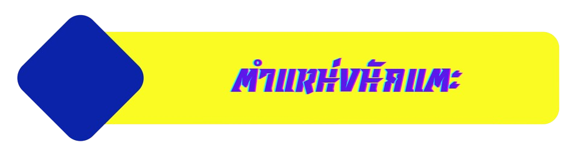

"GK" ในฟุตบอลย่อมาจาก "Goalkeeper" ซึ่งหมายถึงผู้รักษาประตู
หรือผู้เล่นที่มีหน้าที่ป้องกันไม่ให้ลูกบอลเข้าประตูของทีมตนเอง
"RB" ในฟุตบอลย่อมาจาก "Right Back" ซึ่งหมายถึงตำแหน่งกองหลังฝั่งขวา
ผู้เล่นในตำแหน่งนี้มีหน้าที่ป้องกันการบุกของทีมคู่แข่งทางฝั่งขวาของสนาม
และอาจมีส่วนร่วมในการโจมตีโดยการเติมเกมขึ้นไปทางกราบขวาด้วย
"LB" ในฟุตบอลย่อมาจาก "Left Back" ซึ่งหมายถึงตำแหน่งกองหลังฝั่งซ้าย
ผู้เล่นในตำแหน่งนี้มีหน้าที่ป้องกันการบุกของทีมคู่แข่งทางฝั่งซ้ายของสนาม และเช่นเดียวกับ Right Back
ผู้เล่นในตำแหน่ง Left Back อาจมีบทบาทในการสนับสนุนเกมรุกทางกราบซ้ายด้วย
"CB" ในฟุตบอลย่อมาจาก "Center Back" ซึ่งหมายถึงตำแหน่งกองหลังตัวกลาง
ผู้เล่นในตำแหน่งนี้มีหน้าที่หลักในการป้องกันการโจมตีของทีมคู่แข่ง โดยอยู่บริเวณกลางแนวหลัง
ป้องกันลูกกลางอากาศ และปกป้องพื้นที่หน้าประตู
"CMF" ในฟุตบอลย่อมาจาก "Central Midfielder" หรือกองกลางตัวกลาง
ผู้เล่นในตำแหน่งนี้มีหน้าที่หลักในการควบคุมและจัดการเกมในบริเวณกลางสนาม
โดยทำหน้าที่ทั้งในการป้องกันและการโจมตี ผู้เล่น CMF มักจะมีบทบาทในการแจกจ่ายบอล สร้างสรรค์เกม
และช่วยเหลือทั้งกองหลังและกองหน้า
"AMF" ในฟุตบอลย่อมาจาก "Attacking Midfielder" หรือกองกลางตัวรุก
ผู้เล่นในตำแหน่งนี้มีหน้าที่หลักในการสร้างสรรค์เกมรุก สนับสนุนกองหน้า และพยายามทำประตู ผู้เล่น AMF
มักจะเล่นอยู่ในตำแหน่งกลางสนามค่อนไปทางด้านหน้าของคู่ต่อสู้
และมีบทบาทสำคัญในการทำแอสซิสต์หรือทำประตูเอง
"LMF" ในฟุตบอลย่อมาจาก "Left Midfielder" หรือกองกลางฝั่งซ้าย
ผู้เล่นในตำแหน่งนี้มีหน้าที่ควบคุมเกมและสร้างสรรค์การเล่นทางกราบซ้ายของสนาม
โดยมักจะช่วยทั้งในการป้องกันและการโจมตี
สามารถเลี้ยงบอลขึ้นไปส่งบอลหรือเปิดบอลเข้ากรอบเขตโทษเพื่อช่วยกองหน้าได้
"RMF" ในฟุตบอลย่อมาจาก "Right Midfielder" หรือกองกลางฝั่งขวา
ผู้เล่นในตำแหน่งนี้มีหน้าที่ควบคุมและสร้างสรรค์เกมทางด้านขวาของสนาม
โดยมีบทบาททั้งในการช่วยป้องกันและสนับสนุนการโจมตี เช่นเดียวกับ LM ผู้เล่น RMF
มักจะเลี้ยงบอลขึ้นไปส่งบอลหรือเปิดบอลจากกราบขวาเพื่อช่วยกองหน้าในการทำประตูครับ
"LWF" ในฟุตบอลย่อมาจาก "Left Winger Forward" หรือปีกซ้ายที่เล่นในแนวรุก
ผู้เล่นในตำแหน่งนี้มักจะเล่นที่ริมเส้นฝั่งซ้ายของสนาม
โดยมีหน้าที่หลักในการสร้างสรรค์โอกาสทำประตูจากกราบซ้าย เช่น
การเลี้ยงบอลไปจนถึงกรอบเขตโทษแล้วเปิดบอลให้กองหน้า หรือการทำประตูด้วยตัวเอง
"RWF" ในฟุตบอลย่อมาจาก "Right Winger Forward" หรือปีกขวาที่เล่นในแนวรุก
ผู้เล่นในตำแหน่งนี้มักจะเล่นที่ริมเส้นฝั่งขวาของสนาม
โดยมีหน้าที่หลักในการสร้างสรรค์การโจมตีจากกราบขวา เช่น การเลี้ยงบอลขึ้นไปเปิดบอลให้กองหน้า
หรือทำประตูด้วยตัวเอง
"SS" ในฟุตบอลย่อมาจาก "Second Striker" หรือกองหน้าตัวที่สอง
ผู้เล่นในตำแหน่งนี้มักจะเล่นอยู่ด้านหลังกองหน้าตัวเป้า (หรือกองหน้าตัวหลัก)
และมีบทบาทในการสนับสนุนการโจมตี ทำประตู
และสร้างโอกาสจากพื้นที่ที่เป็นกลางสนามหรือพื้นที่ที่กองหน้าไม่สามารถเข้าถึงได้
"CF" ในฟุตบอลย่อมาจาก "Center Forward" หรือกองหน้าตัวกลาง
ผู้เล่นในตำแหน่งนี้มีหน้าที่หลักในการทำประตู โดยมักจะเล่นอยู่ในตำแหน่งที่เป็นศูนย์กลางของแนวรุก
และมักจะเป็นผู้เล่นที่มีบทบาทในการทำประตูหรือช่วยในการสร้างสรรค์โอกาสในการทำประตูให้กับทีม
"DMF" ในฟุตบอลย่อมาจาก"Defensive Midfielder"
หรือกองกลางตัวรับ มีหน้าที่หลักในการป้องกันและตัดเกมของฝ่ายตรงข้าม
และช่วยเชื่อมเกมระหว่างกองหลังกับกองกลาง